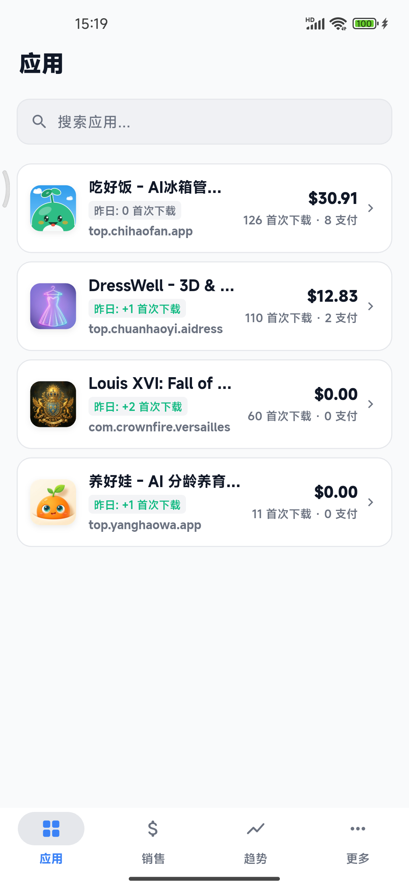
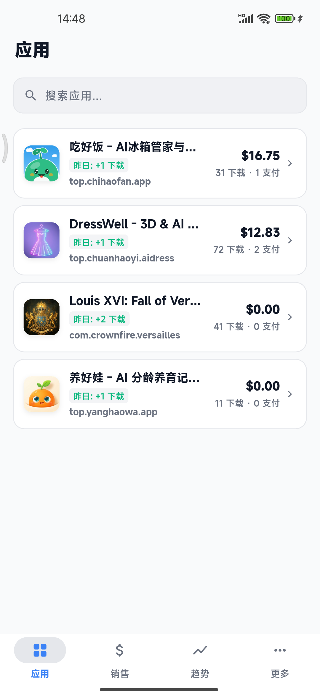
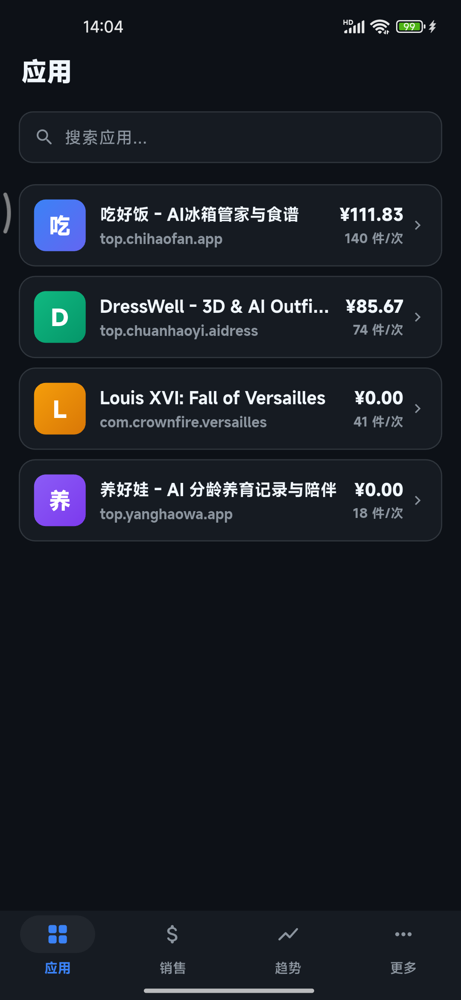
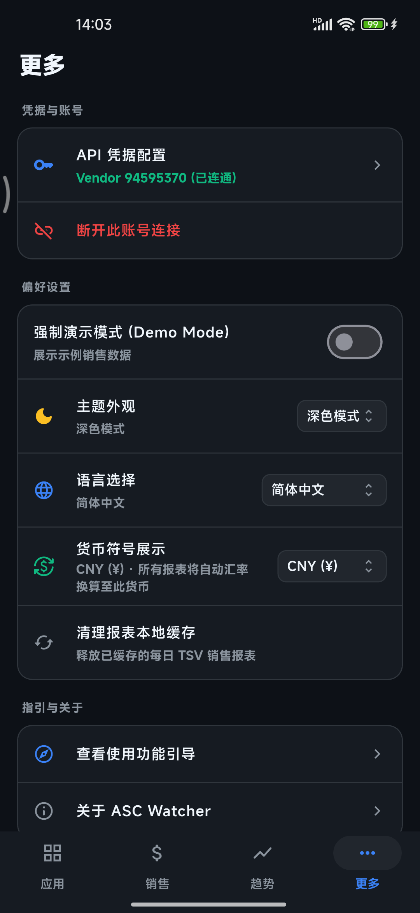

Real Device Gallery
实机真容：浅色与深色模式同样纯粹
来自真实手机运行的销售看板、应用矩阵、单应用详情拆解与深色模式截图（点击任意截图可放大预览）





专为 Apple 独立开发者与团队打造的本地优先销售、首次下载、评论回复与审核发布移动工作台。
无需注册账号、无任何中转服务器，您的 .p8 私钥 100% 保存在手机本机，直连 Apple 官方接口实时拉取财务与运营数据。
从财务净收益、首次下载校准到评论直接回复与过审一键上架，全流程本机直连
您的 Issuer ID、Key ID、Vendor Number 与 .p8 私钥 100% 保存在手机本地，设备端实时签发 JWT 令牌直连 api.appstoreconnect.apple.com，彻底告别把私钥上传给第三方云服务器的风险。
严格按 Apple 官方 Product Type Identifier 区分首次下载（1 / 1F / 1T / F1）与内购订阅（IA1 / IA9 / IAY），自动剔除版本更新（7 / 7F / 7T），与网页端「首次下载次数」严丝合缝。
点击任意一根柱子即可锁定并展开当日构成该总数的具体 App、内购项或国家明细列表；支持 9 种目标货币一键折算，并在括号内自动展示价值最高的前 2 个原始入账币种。
直连 /v1/customerReviews 与 /v1/customerReviewResponses，支持按星级筛选全球评论，内置快捷回复模板，在手机端直接发布、修改或删除开发者官方回复。
实时追踪正在审核、等待审核、被拒、待手动发布与 TestFlight 构建状态；当新版本处于「过审 · 待手动发布」时，无需开电脑即可在手机上一键触发正式上架。
将实时净收益、昨日首次下载、累计首次下载与支付笔数固定在 iOS 与 Android 手机主屏幕，支持浅色/深色实景预览与一键固定到桌面，每次刷新报表自动同步。
点击柱状图拆解单日收入、当场回复一条用户评论、或者亲手点一下「过审一键发布」观察端侧遥测
“之前用过几款统计 App 都要求把 App Store Connect 私钥上传到他们的服务器，一直不敢用。ASC Watcher 纯本机签名直连，还能直接看首次下载和桌面小组件，太安心了！”
来自真实手机运行的销售看板、应用矩阵、单应用详情拆解与深色模式截图（点击任意截图可放大预览）




7 大核心维度横向对比：守住 .p8 私钥安全底线，还原最真实的首次下载与净收益
| 对比维度 | ⚡ ASC Watcher | 传统第三方云端统计工具 / 网页后台 |
|---|---|---|
| 私钥与财务安全 | ✅ .p8 私钥 100% 仅存手机本地，设备端 ES256 签名直连 Apple |
❌ 要求把 .p8 私钥上传到第三方云服务器托管，存在权限泄露风险 |
| 下载量统计口径 | ✅ 精准分离首次下载（1/1F/1T/F1）、内购支付与版本更新，对齐 ASC 网页端 | ❌ 常把版本自动更新（Type 7）混入下载总数导致数据严重虚高 |
| 多币种展示与折算 | ✅ 9 种目标货币实时折算 + 括号内自动展示前 2 大原始入账币种 | ❌ 仅显示单一折算值，或因多币种直接相加导致货币符号错乱 |
| 图表交互与构成拆解 | ✅ 点击柱状图任意柱子即时展开当日由哪几款 App、内购与国家贡献的明细 | ❌ 静态图表，无法按日下钻查看单日收入与下载来源构成 |
| 用户评论与直接回复 | ✅ 支持按星级筛选全球评论，并在 App 内直接发布、修改或删除官方回复 | ❌ 仅能只读查看评论，或必须回电脑网页端登录回复 |
| 审核监控与过审一键发布 | ✅ 实时查看版本审核与 TestFlight 状态，过审待发布版本支持手机端一键上架 | ❌ 无版本状态追踪，或不支持手机端触发手动发布请求 |
| 商业模式与诚意定价 | ✅ 前 100 次打开零弹窗免打扰，满 100 次仅温和提醒（可手动关闭继续用）；支持 ¥68 买断或 ¥38/年、¥6/月 | ❌ 免费版锁死核心图表，强制昂贵月度或年度连续扣费订阅 |
前 100 次打开零弹窗免打扰；满 100 次后也绝不锁死功能，仅在启动时温和提醒（可随时关闭继续使用）
与 site.config.json 及 JSON-LD 结构化数据同源对齐
绝对不会。ASC Watcher 没有账号系统，也没有任何自建后端服务器。您输入的 Issuer ID、Key ID、Vendor Number 与 .p8 私钥仅保存在您的手机本地存储中，所有 JWT 签名均在设备本地完成后直接请求 Apple 官方接口（api.appstoreconnect.apple.com）。
首次打开且未配置凭据时，应用默认提供内置的「演示模式（Demo Mode）」示例数据，方便您直观体验全部图表交互、币种切换、评论回复与版本发布流程。您随时可以在「更多 → API 凭据配置」中填入真实密钥切换为实时数据。
如果您只需查看销售与下载报表，在 App Store Connect「用户和访问 → 集成 → App Store Connect API」中分配「财务（Finance）」或「销售和趋势（Sales and Reports）」只读角色即可；如果您还希望在 App 内直接回复用户评论或一键发布过审版本，建议分配「客户支持（Customer Support）」或「App 管理（App Manager）/ 管理（Admin）」角色。
可以。进入任意应用详情页，底部的「版本与审核状态」与「用户评分与评论」默认仅展示最新 1 条以保持页面清爽，点击即可展开全部。您可以直接使用快捷模板或自定义文字发布/修改/删除官方开发者回复，也可以对处于「过审 · 待手动发布（PENDING_DEVELOPER_RELEASE）」的版本一键触发立即上架。
可以继续免费使用。前 100 次打开应用完全静默零弹窗、开放全部核心功能。满 100 次后并不是锁死不能用，而是进入 App 时会自动弹出一次 Pro 订阅引导页（带 2 小时冷却保护，不会频繁打扰），您可以手动点击右上角关闭并继续使用全部功能；若您愿意支持独立开发或希望永久消除启动弹窗，可选择 ¥6/月（$0.99）、¥38/年（$4.99）连续订阅，或 ¥68（$9.99）一次性终身买断。
进入「更多 → 手机桌面小组件」，可先预览深色/浅色实景效果并点击「一键添加到手机桌面」；也可以长按手机主屏幕空白处，在系统「小组件 / 窗口小工具」列表中找到 ASC Watcher (4×2) 并拖入桌面。